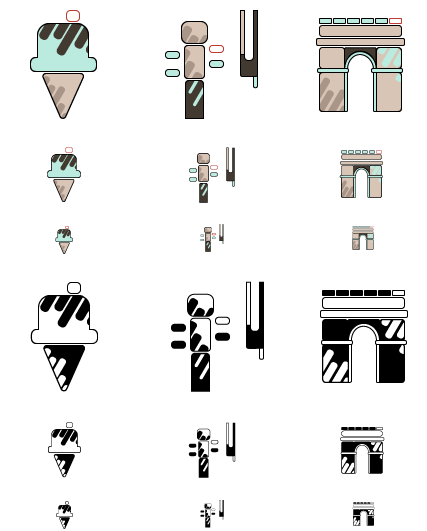

October 2, 2019
Project 2: Icons

The most challenging aspect of this project was keeping the icons simple and scalable, yet still interesting and visually appealing. Once I came up with the rounded rectangle theme, it became easier. Some common elements tying the icons together as a set are: shapes simplified to rectangles, rounded corners, consistent spacing between rectangles, diagonal rectangles, single open red rectangle, stroke color and weight, and consistent colors.
September 4, 2019
Project 1: Isometric Avatar

Using the isometric grid, I used Adobe Illustrator to create this avatar. Typically in Illustrator, I use the pen tool but I opted for the pencil tool for this project because I wanted more natural, flowing lines to give it a more organic feel. I tried to stick to a muted color palette because I usually wear those colors, and it gives the design a more cohesive look. My favorite part is the little bit on top of the beret which I drew as a tiny floating circle.